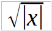
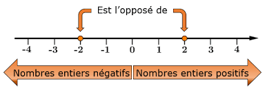
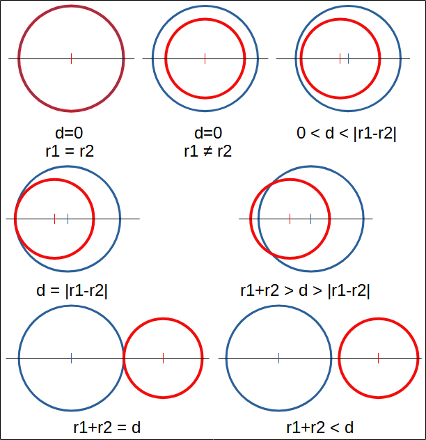
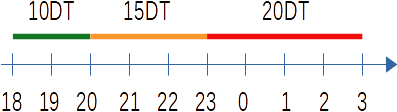
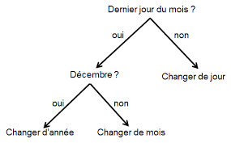
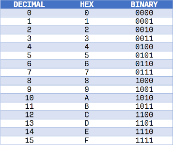
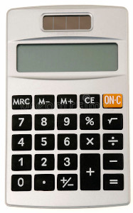
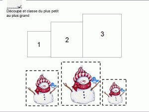
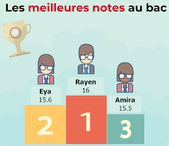

Série N°2
Exercice 1 : Racine carrée de la valeur absolue
Ecrire un programme qui permet de lire un réel
x
, puis d'afficher la racine carrée de sa valeur
absolue,
sans utiliser
la fonction prédéfinie
abs
.

Si condition Alors
// Traitement
Fin Siif condition:
# TraitementExercice 2 : Signe d'un nombre

Écrire un programme qui affiche si un nombre
x
donné est :
-
positif
, si
x > 0 -
négatif
, si
x < 0 -
nul
, si
x = 0
Si condition1 Alors
// Traitement 1
Sinon Si condition2 Alors
// Traitement 2
Sinon
// Traitement 3
Fin Siif condition1:
# Traitement 1
elif condition2:
# Traitement 2
else:
# Traitement 3Donner un nombre ? 27
27 est positifDonner un nombre ? -6
-6 est négatifExercice 3 : Intersection de deux cercles
Soient deux cercles du plan
C1
et
C2
de rayons respectifs
r1
et
r2
, les centres des deux cercles étant à une distance
d
donnée.
Ces deux cercles :
-
sont
confondus
, si
d = 0etr1 = r2 -
sont
disjoints intérieurement
, si
d = 0etr1 ≠ r2 -
sont
disjoints intérieurement
, si
0 < d < |r1 - r2| -
sont
tangents intérieurement
, si
d = |r1 - r2| -
sont
sécants
, si
|r1 - r2| < d < r1 + r2 -
sont
tangents extérieurement
, si
d = r1 + r2 -
sont
disjoints extérieurement
, si
d > r1 + r2

On demande d'écrire un programme qui saisit les données mentionnées puis affiche la position relative des deux cercles.
Si condition1 Alors
// Traitement 1
Sinon Si condition2 Alors
// Traitement 2
...
Fin Siif condition1:
# Traitement 1
elif condition2:
# Traitement 2
...
d
aux expressions
|r1 - r2|
et
r1 + r2
dans l'ordre pour identifier le cas géométrique.
Rayon de C1 ? 6
Rayon de C2 ? 3
Distance entre les centres ? 9
Les deux cercles sont tangents extérieurementRayon de C1 ? 10
Rayon de C2 ? 10
Distance entre les centres ? 10
Les cercles se coupent en deux pointsExercice 4 : Jeu de trois dés

Les combinaisons gagnantes dans un jeu de trois dés sont les suivantes :
- Trois nombres identiques, on gagne 300 pts
- Deux nombres identiques ou la somme des trois dés est égale à 6, on gagne 200 pts
- Au moins un 6, on gagne 50 pts
- Dans les autres cas, on gagne la somme des trois dés
On demande d'écrire un programme qui :
- Simule le lancement de trois dés (valeurs aléatoires entre 1 et 6)
- Affiche la valeur de chaque dé, ainsi que la somme des trois dés
- Calcule et affiche le nombre de points gagnés
Si condition1 Alors
// Gain maximal (300 pts)
Sinon Si condition2 Alors
// Gain intermédiaire (200 pts)
Sinon Si condition3 Alors
// Gain minimal (50 pts)
Sinon
// Gain standard (Somme)
Fin Siif condition1:
# Gain 300 pts
elif condition2:
# Gain 200 pts
elif condition3:
# Gain 50 pts
else:
# Gain sommeDé1 : 6 - Dé2 : 3 - Dé3 : 4
Somme : 13
Vous gagnez 50 ptsDé1 : 4 - Dé2 : 1 - Dé3 : 2
Somme : 7
Vous gagnez 7 ptsExercice 5 : Conversion de devise

On donne les taux de conversion suivants :
1€ = 1.17$ = 3.28 D
.
Écrire un programme qui :
-
Saisit le montant à convertir
mac. -
Saisit la devise initiale
di( $ , € ou D ). -
Saisit la devise requise
dr( $ , € ou D ). -
Calcule la valeur convertie
mcdemacde la devisedivers la devisedr. -
Affiche le résultat de la conversion
mc.
Selon variable
valeur1, valeur2 : // Traitement 1
valeur3 .. valeur4 : // Traitement 2
Sinon : // Traitement par défaut
Fin Selonmatch variable:
case valeur1 | valeur2:
# Traitement 1
case _:
# Traitement par défautMontant ? 100
Devise initiale ($/€/D) ? D
Devise requise ($/€/D) ? $
100 D = 35.67 $Montant ? 100
Devise initiale ($/€/D) ? €
Devise requise ($/€/D) ? $
100 € = 117.0 $Exercice 6 : Vendeur de poissons (Prix de vente)

Un vendeur de poissons veut calculer le prix de vente de ses marchandises en fonction du prix d'achat :
Prix vente = Prix achat × (1 + gain / 100)
Sachant que :
-
gain = 20%, si0 ≤ Prix achat < 15 -
gain = 25%, si15 ≤ Prix achat < 30 -
gain = 35%, siPrix achat ≥ 30
Écrire un programme qui :
-
Saisit le nom du produit
npet son prix d'achatpa. -
Détermine le pourcentage de gain
gselon les tranches ci-dessus. -
Calcule et affiche le prix de vente
pv.
Si condition1 Alors
// Traitement 1
Sinon Si condition2 Alors
// Traitement 2
Sinon
// Traitement 3
Fin Siif condition1:
# Traitement 1
elif condition2:
# Traitement 2
else:
# Traitement 3Calcul du prix de vente
Quel est le nom du produit ? Sardines
Quel est le prix d'achat (DT) ? 5
Gain : 20 %
Prix de vente : 6.0 DTCalcul du prix de vente
Quel est le nom du produit ? Trilia
Quel est le prix d'achat (DT) ? 20
Gain : 25 %
Prix de vente : 25.0 DTExercice 7 : Garde d'enfants

Une garde d'enfants applique la tarification horaire suivante :
- 10 DT / heure entre 18h et 20h
- 15 DT / heure entre 20h et 23h
- 20 DT / heure entre 23h et 03h

Écrire un programme qui saisit l'heure d'arrivée d'un enfant et l'heure de départ de ses parents, puis calcule et affiche le montant total à payer.
Si condition1 Alors
// Traitement 1
Sinon Si condition2 Alors
// Traitement 2
Sinon
// Traitement 3
Fin Siif condition1:
# Traitement 1
elif condition2:
# Traitement 2
else:
# Traitement 3Heure d'arrivée ? 18
Heure de départ ? 23
Le montant à payer 65 DTHeure d'arrivée ? 21
Heure de départ ? 0
Le montant à payer 50 DTExercice 8 : Date du lendemain
Écrire un programme qui saisit une date sous la forme
jj/mm/aaaa
, puis calcule et affiche la
date du lendemain.

Rappel du nombre de jours par mois :
| Jan | Fév | Mar | Avr | Mai | Juin | Juil | Août | Sep | Oct | Nov | Déc |
|---|---|---|---|---|---|---|---|---|---|---|---|
| 31 | 28 | 31 | 30 | 31 | 30 | 31 | 31 | 30 | 31 | 30 | 31 |
Si condition Alors
// Traitement 1 (Même mois)
Sinon
// Traitement 2 (Changement de mois/année)
Fin Siif condition:
# Même mois
else:
# Changement mois/annéeEntrer une date (jj/mm/aaaa) ? 31/12/2021
Lendemain = 1 / 1 / 2022Entrer une date (jj/mm/aaaa) ? 28/02/2021
Lendemain = 1 / 3 / 2021Exercice 9 : Chiffre hexadécimal
Ecrire un programme qui permet de saisir un entier
n
entre 0 et 15
et de le
convertir en chiffre hexadécimal
(0-9 conservés, 10-15 représentés par A-F).

Selon variable
valeur1, valeur2 : // Traitement 1
valeur3 .. valeur4 : // Traitement 2
Sinon : // Traitement par défaut
Fin Selonmatch variable:
case valeur1 | valeur2:
# Traitement 1
case var if valeur3 <= var <= valeur4:
# Traitement 2
case _:
# Traitement par défautExercice 10 : Tiny Calculator

Ecrire un programme calculatrice qui permet de saisir deux valeurs réelles
a
et
b
,
puis un opérateur arithmétique
op
(
+
,
-
,
*
,
/
) et affiche le résultat de l'opération.
Attention : tester une éventuelle division par zéro.
Selon opérateur
"+" : // Addition
"-" : // Soustraction
"*" : // Multiplication
"/" : // Division avec test de zéro
Fin Selonmatch op:
case "+": # Addition
case "-": # Soustraction
case "*": # Multiplication
case "/": # Division (if b != 0)Exercice 11 : Bonhommes de neige ordonnés

Ecrire un programme qui saisit l'hauteur, en cm, des trois bonhommes de neige
a
,
b
et
c
puis affiche s'ils sont
ordonnés
ou pas.
Note : Les bonhommes de neige peuvent être ordonnés en ordre croissant ou en ordre décroissant.
Si condition Alors
// Traitement 1 (si Vrai)
Sinon
// Traitement 2 (si Faux)
Fin Siif condition:
# Traitement 1 (si True)
else:
# Traitement 2 (si False)Hauteur du Bonhomme 1 ? 3
Hauteur du Bonhomme 2 ? 4
Hauteur du Bonhomme 3 ? 5
Les bonhommes sont ordonnésHauteur du Bonhomme 1 ? 3
Hauteur du Bonhomme 2 ? 5
Hauteur du Bonhomme 3 ? 4
Les bonhommes ne sont pas ordonnésExercice 12 : La meilleure moyenne

Ecrire un programme qui saisit les notes et les noms de trois élèves, puis affiche le nom de l'élève qui a obtenu la meilleure note .
On suppose que les notes sont deux à deux distinctes.
Si condition1 Alors
// Traitement 1
Sinon Si condition2 Alors
// Traitement 2
Sinon
// Traitement 3
Fin Siif condition1:
# Traitement 1
elif condition2:
# Traitement 2
else:
# Traitement 3Elève 1 ? Eya
Moyenne Eya ? 15.6
Elève 2 ? Rayen
Moyenne Rayen ? 16.0
Elève 3 ? Amira
Moyenne Amira ? 15.5
L'élève Rayen a obtenu la meilleure moyenneElève 1 ? Sami
Moyenne Sami ? 17.6
Elève 2 ? Youssef
Moyenne Youssef ? 13.0
Elève 3 ? Abderrazek
Moyenne Abderrazek ? 18.5
L'élève Abderrazek a obtenu la meilleure moyenne